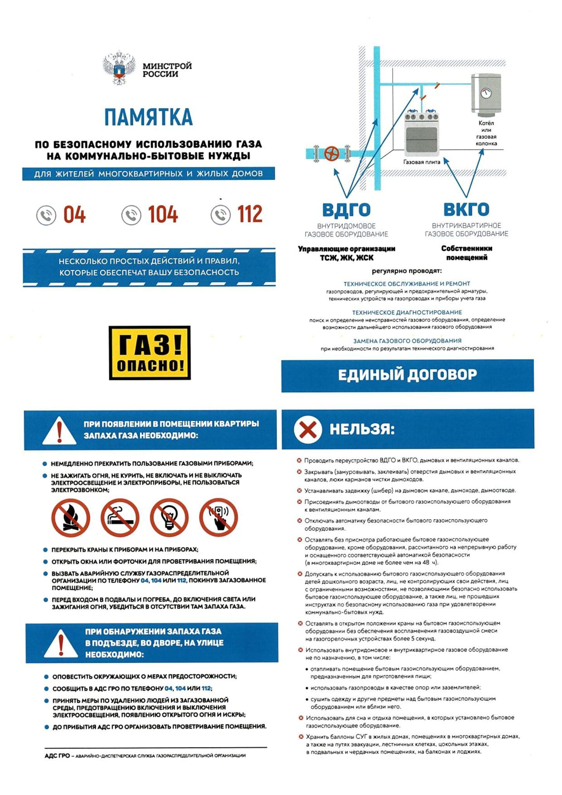

ЖИЛИЩНО-ЭКСПЛУАТАЦИОННЫЕ ОРГАНИЗАЦИИ И ДОМОВЛАДЕЛЬЦЫ ОБЯЗАНЫ:
Оказывать предприятиям газового хозяйства всестороннюю помощь при проведении ими технического обслуживания газового оборудования (1 раз в год) и пропаганды безопасности пользования газом среди населения.
Содержать в надлежащем техническом состоянии подвалы, технические коридоры и подполья, поддерживать в рабочем состоянии их электроосвещение и вентиляцию. Следить за местами пересечений внутренних газопроводов и строительных элементов зданий, герметизаций вводов в здания инженерных коммуникаций.
Обеспечивать работникам предприятий газового хозяйства беспрепятственный доступ в любое время суток в подвалы, технические подполья и помещения первых этажей для проверки их на загазованность.
Своевременно обеспечивать проверку состояния дымоходов, вентиляционных каналов и оголовков дымоходов, осуществлять контроль за качеством их проверки, предоставлять предприятиям газового хозяйства, по их требованию, акты проверки исправности дымоходов и вентиляционных каналов или сведения о последней проверке, занесенные в специальный журнал.
Немедленно сообщать предприятиям газового хозяйства о необходимости отключения газовых приборов при самовольной их установке или выявлении неисправности дымоходов.
Заселять газифицированные квартиры (заселение первичное, при обмене) только после инструктажа жильцов представителем предприятия газового хозяйства при наличии подтверждающего документа.
Вызывать представителя газового хозяйства для отключения приборов при выезде жильца на квартиры.
